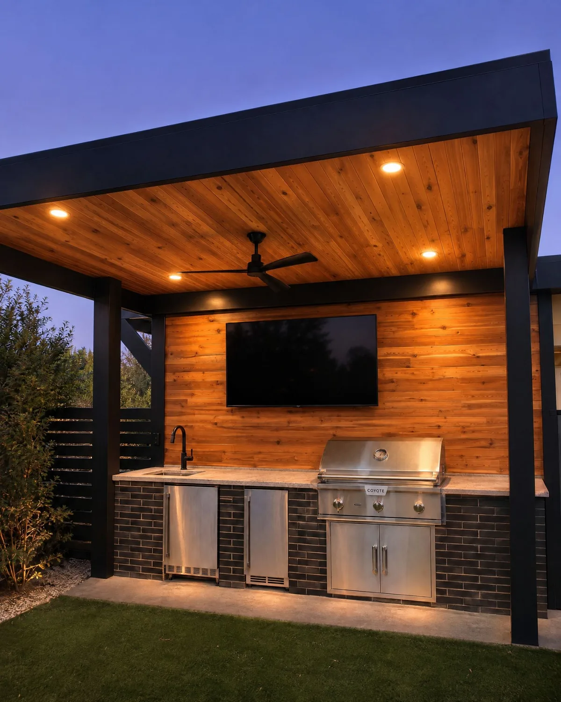
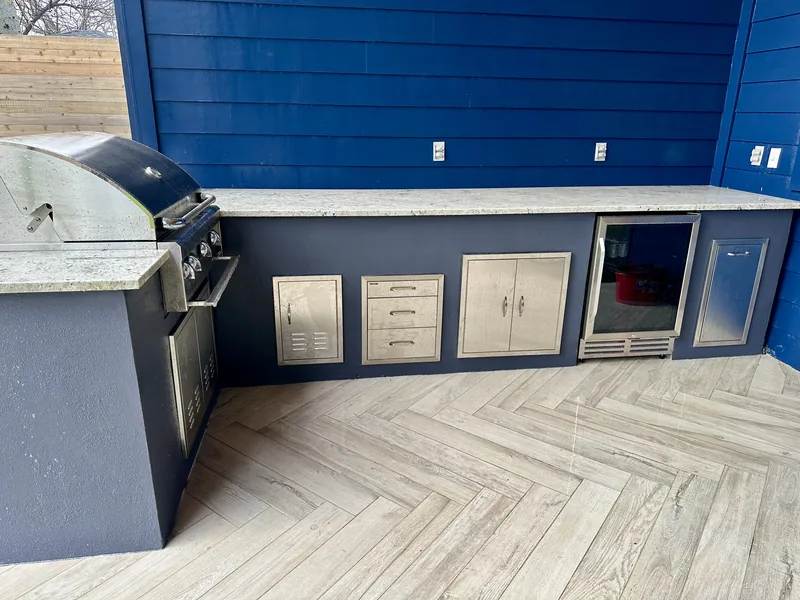

Yes: Realtors estimate that an outdoor kitchen recovers 100 percent of its cost when the home sells, according to the 2023 Remodeling Impact Report from the National Association of Realtors and the National Association of Landscape Professionals. Zillow’s 2026 research found that homes listed with an outdoor kitchen sold for 4.4 percent more than similar homes without one. The same reports say most owners build one to use it, and that is the right reason. Red Agave Landscape designs and builds outdoor kitchens in Austin, TX, and two of them are below.

How Much Value Does an Outdoor Kitchen Add?
The Remodeling Impact Report: Outdoor Features compares eleven outdoor projects. Landscape professionals estimated what each one costs, Realtors estimated how much of that cost comes back at sale, and owners scored how happy the finished project made them. Among the projects that are built, the outdoor kitchen is tied for the highest cost recovery. Only lawn care and landscape maintenance, which are upkeep services, came in higher.
| Outdoor project | Cost recovered at sale | Owner Joy Score (out of 10) |
|---|---|---|
| Outdoor kitchen | 100 percent | 9.0 |
| Overall landscape upgrade | 100 percent | 9.7 |
| New patio | 95 percent | 9.9 |
| New wood deck | 89 percent | 9.8 |
| Landscape lighting | 59 percent | 10 |
| Fire feature | 56 percent | 9.7 |
| In-ground pool | 56 percent | 10 |
The kitchen in the report is a specific one: an inset grill, stainless steel drawers, an ice chest, a sink, and 60 square feet of concrete countertop on a base of veneered masonry stone. It is a permanent, built-in kitchen. The cost recovery figures come from 1,891 Realtors who answered the association’s survey in February 2023.
Do Homes With an Outdoor Kitchen Sell for More?
Zillow’s answer is yes. Its 2026 study of home features that sell looked at more than 2 million homes listed for sale in 2025 and more than 600 phrases used in their listings. Homes that mentioned an outdoor kitchen sold for 4.4 percent more than expected. An outdoor fireplace was linked to 2.8 percent.
Zillow is careful about what that means. "More than expected" means more than similar homes, matched on things like location, size, and bedrooms, that did not have the feature. It is a link between the feature and the price, measured across the market.
Buyers want the ground an outdoor kitchen stands on, too. In the National Association of Home Builders study What Home Buyers Really Want, a patio tied for the most wanted feature of more than 200: 86 percent of buyers rated it essential or desirable. Exterior lighting came in at 82 percent and landscaping at 80 percent. The study surveyed more than 3,000 recent and prospective buyers.
Should You Build an Outdoor Kitchen Just to Sell the House?
No. Build it to use it. The same report that puts cost recovery at 100 percent found that only 1 percent of Realtors recommend adding an outdoor kitchen before selling. Zillow gives sellers the same advice: there is no need to rush into a renovation right before listing.
The owners in the report did not build for a sale either:
- 56 percent built their outdoor kitchen to add features and improve livability
- 99 percent have a greater desire to be home since finishing it
- 81 percent feel a major sense of accomplishment when they think of the project
- 71 percent enjoy being at home more
So the value arrives twice. You use the kitchen for the years you live in the house, and Realtors expect its cost to come back when you sell.
What Makes an Outdoor Kitchen Hold Its Value?
Being permanent. The kitchen that Realtors valued at full cost recovery is masonry, concrete, and built-in stainless. The most important result owners named, at 28 percent, was durable and long-lasting results and materials.
That is how we build them. Red Agave builds outdoor kitchens out of IPE, steel, CMU block, tile, and concrete. Stone or brick goes over a CMU block base, and a tile kitchen is wood-framed and sheathed in concrete board. Every kitchen is custom-built on site.
Three more things protect the value:
- A roof. It keeps sun and rain off the appliances and the counter, and it gives the kitchen a ceiling for lights and a fan. See why we build kitchens under a roof.
- Utilities on the plan. Gas, water, and power run under the slab or inside the base, so their routes are fixed before anything is poured.
- Permits. We handle permitting with the City of Austin, and licensed plumbers run the gas line.
What Does That Look Like on a Real Austin Home?
Two kitchens we built show it.
West Lake Hills. The kitchen stands under its own flat roof on black posts, with a tongue-and-groove wood ceiling. A dark brick base holds a stainless built-in grill, a sink, two under-counter refrigerators, and stainless access doors, under a stone countertop. Four recessed lights and a ceiling fan hang overhead. See more of our work on the West Lake Hills page.
East Austin. An L-shaped kitchen runs along two walls of a covered patio. It has a dark blue stucco base and a granite top, with the grill in its own return at one end. A three-drawer unit, access doors, and a glass-front beverage refrigerator are set into the base.

Both have what the kitchen in the Realtors’ report has at its core: a built-in grill, stainless storage, and a hard countertop on a solid base. A third, on our East Austin pool project, has a steel-faced base and stands in front of a backlit Corten steel screen.
Every Red Agave project starts with a free consultation, and the CAD plan is included. See our outdoor kitchens service. For pricing, see our outdoor kitchen cost guide.
What Sources Did We Use?
We read each of these in November 2026.
- National Association of Realtors and National Association of Landscape Professionals, 2023 Remodeling Impact Report: Outdoor Features, March 2023
- Zillow Research, Treh Manhertz, Zillow’s 2026 home features that sell for more, March 24, 2026
- National Association of Home Builders, Eye On Housing, Outdoor Features, a Laundry Room Among Most Wanted Features, April 2024
Questions We Hear
Do outdoor kitchens add value to a home?
Yes. In the 2023 Remodeling Impact Report from the National Association of Realtors and the National Association of Landscape Professionals, Realtors estimated that an outdoor kitchen recovers 100 percent of its cost at sale. Zillow’s 2026 research found that homes listed with an outdoor kitchen sold for 4.4 percent more than similar homes.
What is the return on an outdoor kitchen compared with a deck or a pool?
In the same report, Realtors estimated cost recovery at 100 percent for an outdoor kitchen, 95 percent for a new patio, 89 percent for a new wood deck, and 56 percent for an in-ground pool or a fire feature.
Should I add an outdoor kitchen before I sell?
No. Only 1 percent of Realtors in the report recommend adding one before selling. Build it to use it: 99 percent of owners said they have a greater desire to be home since finishing theirs.
What kind of outdoor kitchen holds its value?
A permanent one. The kitchen in the Realtors’ report has an inset grill, stainless drawers, a sink, and a concrete countertop on a masonry base. Red Agave builds kitchens out of IPE, steel, concrete, CMU block with stone or brick over it, and tile on a wood frame with concrete board.
Does Red Agave build outdoor kitchens in Austin?
Yes. We have built a covered kitchen in West Lake Hills and two kitchens in East Austin. Every one is owner-designed and built by our own crew.